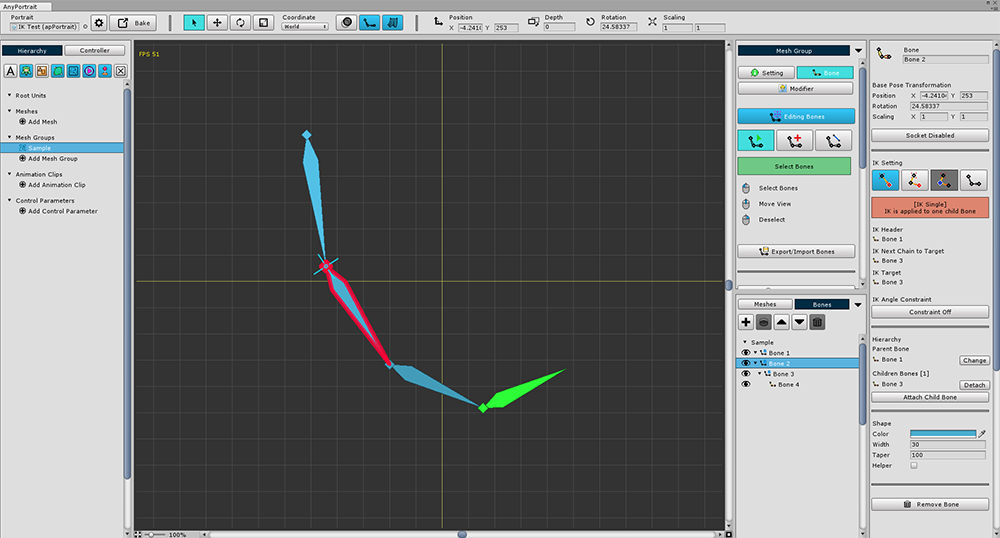
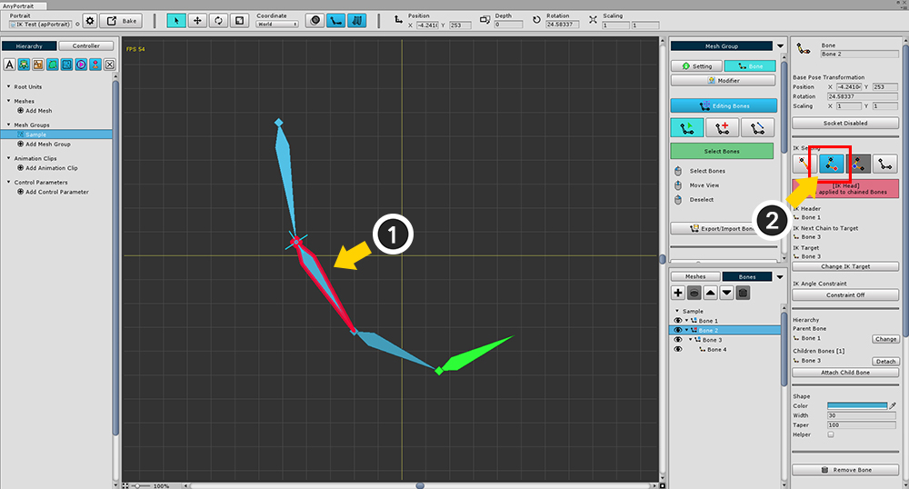
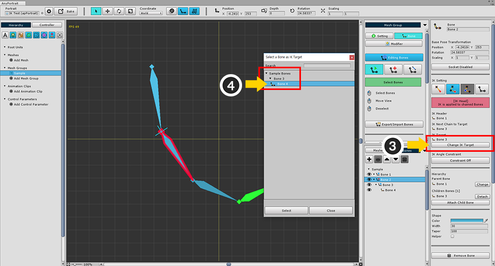
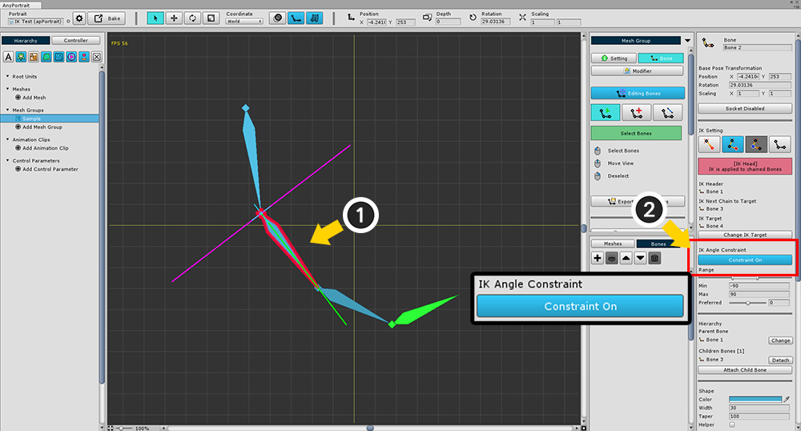
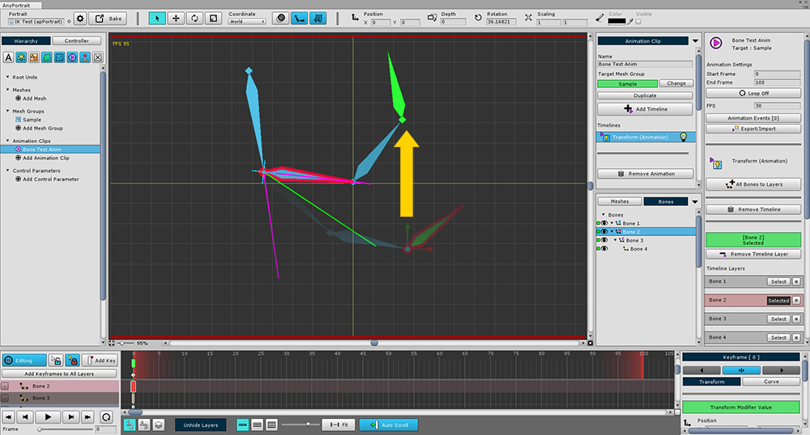
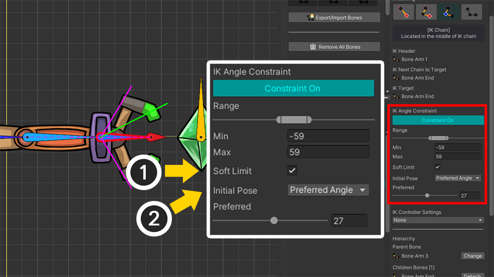
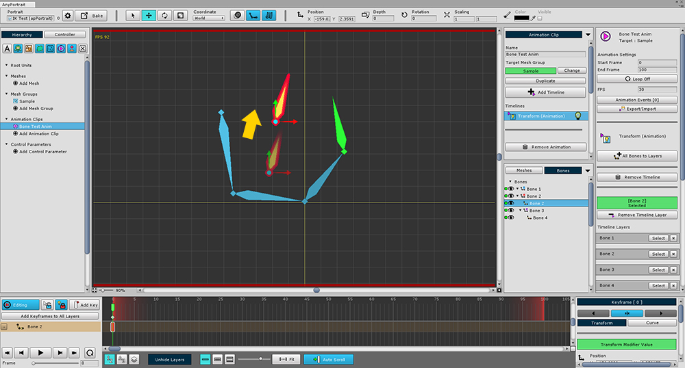

AnyPortrait > Manual > IK Settings
IK Settings
1.0.0

When controlling the bones, basically you control by rotating the bones.
Sometimes, on the other hand, the user moves one bone and the other is automatically rotated.
This method is called IK (Inverse Kinematics).
IK allows intuitive control.
AnyPortrait provides both (1) IK control functions for editor editing and (2) IK functions that can be called from the game.
This page describes the settings for using IK and how to use it in the editor.
Bones with IK enabled Scripts used in this game can be found on the related page.
Bone Details UI

Bone details UI is structured as follows.
1. Name : Bone name
2. Base Pose Transformation : Default position, rotation, scale
3. Socket: Whether to set the socket
4. IK Mode : Current status of four IK modes (Single, Head, Chain, Disabled)
5. IK chain information : IK chain connection information
6. Constraint : IK angle limit setting
7. Hierarchy : Bone parent, child connection information
8. Shape : Shape and color rendered to the editor. Render position only when Helper is checked
9. Remove Bone
Create an IK chain
When you deal with this IK setting professionally, you need a lot of options and it can be difficult.
To make IK fast and easy, AnyPortrait provides "IK Chain" and "IK Mode" methods.

Concept illustration of IK chain.
The IK chain consists of Head, Chain, and Target.
IK is calculated from the position of the Target bone with the Head bone as the starting point.
For IK chains, the bone has one of four IK modes.
1. Single : The state of the Head with the target directly attached without a chain. This is the default for all bones with child bones.
2. Head : The starting point of the IK chain.
3. Chain : The state of the intermediate bones in the IK chain. All bones between Head and Target are in Chain mode, which is forced.
4. Disabled : Not in the IK chain. There is no child bone or is arbitrarily specified.

To create an IK chain,
(1) select the bone to be the Head of the IK chain,
(2) change the IK mode to Head.

(3) Press the Change IK Target button to (4) select the child to be targeted.


When the IK chain is created, the middle bones are automatically changed to Chain mode.
The target bone is not affected by the IK chain itself.
(Currently, there is no child bone, which is Disabled mode, but you can also configure a new IK chain.)

With the IK chain in place, you can see that the bones in the chain rotate automatically as you move the bone.
(You can also check in bone editing, modifiers, and animations.)
IK Angle Constraint

IK calculation, you may want to limit the angle depending on the joint.
Here's how to use the ability to limit the angle of rotation.
(1) Select the bone in the IK chain to limit the rotation angle.
(2) Press the Constraint button to enter the Constraint On state.

Sets the rotation limit range.
You can set the limit range with Min and Max values.
The Preferred value is the angle that is the basis of the IK calculation expression.
Bones with angle constraint can be viewed intuitively on the screen.

IK angle constraints can be found in the modifier or animation.
(Note : Since it is a function of limiting the rotation deformation value, it is not possible to check on the mesh group-Bone tab.)
When you work on a modifier or animation, you can see that the angle-limited IK is executed as in the above screen.
This setting also applies to games.

1.5.0
Added options related to IK angle constraints.
1. Soft Limit is an option that applies rotation angle constraints a little loosely to make the bone move naturally.
2. Initial Pose is an option for the pose that IK calculations initially refer to.
These options work when the IK method is set to FABRIK. (Related page)
For more information, please refer to the following manual.
- Making IK work as intended
Bone without IK

There are cases where IK should not be applied.
In the following cases, the parent bone is not related to the IK chain relationship.
- If there is no parent bone
- If the parent bone is in Disabled mode
- If the parent bone has an IK chain but is targeted to another child bone
The above picture shows that the parent bone has an IK chain but the IK chain is not formed because the IK chain is formed for the other child bone.

If IK is not set, the parent bone will not rotate.